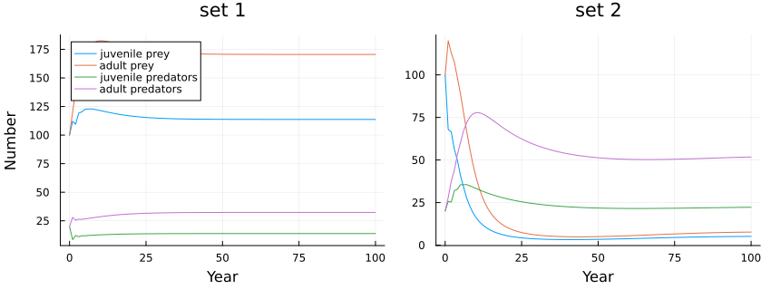
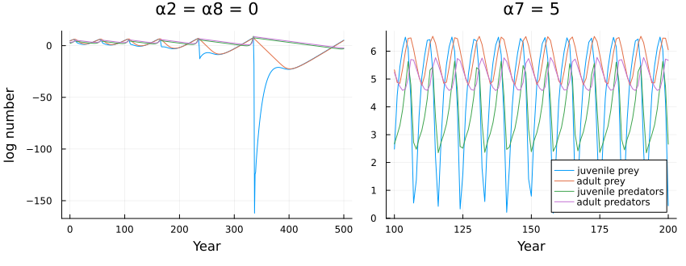
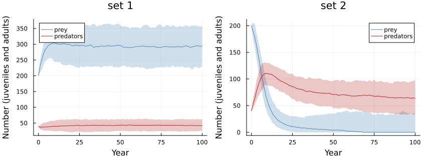

A predator and its prey, each with juveniles and adults
Simon Frost
- The model
- Two species and two pools
- Agreement with the authors’ difference equations
- A stable fixed point
- Without density dependence within species, and with high fecundity
- Demographic stochasticity
- What is measured and what is assumed
- Reference
ENV["GKSwstype"] = "100"
using MatrixCommunityModels
using LinearAlgebra, Printf, Random, Statistics
using PlotsThe model
Barraquand & Gimenez (2019) built an integrated community model: a predator-prey matrix model fitted at once to counts, capture-recapture histories and records of reproduction, in a Bayesian framework (JAGS). Its core is a deterministic nonlinear matrix model with two species and two stages each, which this vignette rebuilds and runs. The fitting is not done here.
The census is taken each year just before breeding, so the juveniles counted are last year’s young that survived their first year, and they breed as adults the year after. With juvenile and adult prey nVJ, nVA and juvenile and adult predators nPJ, nPA, the projection matrix is
\[\mathbf A(\mathbf n) = \begin{pmatrix} 0 & \tfrac12 f_V(n_V^A)\,\phi_V^J(n_P^A) & 0 & 0\\ \phi_V^A & \phi_V^A & 0 & 0\\ 0 & 0 & 0 & \tfrac12 f_P(n_V^J)\,\phi_P^J(n_P^A)\\ 0 & 0 & \phi_P^A & \phi_P^A \end{pmatrix}\]
with
- newborn predator survival
ϕPJ(n) = 1 / (1 + exp(-(α1 + α2 n))), falling with adult predators (crowding among predators); - newborn prey survival
ϕVJ(n) = 1 / (1 + exp(-(α3 + α4 n))), falling with adult predators (predation); - predator fecundity
fP(n) = exp(α5 + α6 n), rising with juvenile prey (food); - prey fecundity
fV(n) = exp(α7 + α8 n), falling with adult prey (crowding among prey);
and constant adult survival ϕVA and ϕPA. The factor one half counts female offspring.
Two species and two pools
Each species is a net with three transitions, reproduction, maturation and adult_survival. The responses on reproduction carry the four density dependencies. Two depend on the species’ own adults; the other two need the other species, so they read a pool: the prey reads adult_predators, which the predator fills, and the predator reads juvenile_prey, which the prey fills.
m = predator_prey()
(species = species_names(m.community), pools = pool_names(m.community),
transitions = transition_names(system(m.community)[:prey]))(species = [:prey, :predator], pools = [:juvenile_prey, :adult_predators], transitions = [:adult_survival, :maturation, :reproduction])The parameters are the first set of the paper’s Table 5:
BARRAQUAND_GIMENEZ_2019(alpha = (0.5, -0.01, 0.5, -0.025, 0.0, 0.004, 2.0, -0.005), adult_survival = (prey = 0.6, predator = 0.7), n0 = (prey = [100.0, 100.0], predator = [20.0, 20.0]))Agreement with the authors’ difference equations
The authors’ code (GitHub oliviergimenez/predator_prey_icm, GPL-3) includes the deterministic difference equations of their Appendix A. The package is MIT licensed, so none of that code is used here: the model above is written from the paper’s equations and Table 5. The scripts were run in R as they stand (only their plots dropped and their number of years set) by test/reference/R/run_predator_prey_reference.R, and their trajectories are compared with this model’s:
ref = joinpath(pkgdir(MatrixCommunityModels), "test", "reference", "predprey_trajectories.csv")
rows = [split(l, ",") for l in readlines(ref)[2:end]]
A, B = BARRAQUAND_GIMENEZ_2019, BARRAQUAND_GIMENEZ_2019_SET2
with7(p, a7) = merge(p, (alpha = Base.setindex(p.alpha, a7, 7),))
runs = ["set1_table5" => A, "set1_appendix" => with7(A, 1.75), "set2" => B,
"set1_high" => with7(A, 5.0), "set2_high" => with7(B, 4.7),
"no_intra" => merge(A, (alpha = (0.5, 0.0, 0.5, -0.025, 0.0, 0.004, 1.75, 0.0),))]
reference(label) = permutedims(reduce(hcat, [parse.(Float64, r[3:6]) for r in rows if r[1] == label]))
project_set(p, years) = (mm = predator_prey(p); project(mm.community, mm.n0, fill(nothing, years)))
for (label, p) in runs
R = reference(label)
sol = project_set(p, size(R, 1) - 1)
@printf("%-14s %3d years largest relative difference %.1e\n", label, size(R, 1) - 1,
maximum(abs.(sol.u .- R) ./ max.(abs.(R), 1.0)))
endset1_table5 99 years largest relative difference 5.0e-16
set1_appendix 99 years largest relative difference 2.0e-16
set2 99 years largest relative difference 0.0e+00
set1_high 499 years largest relative difference 7.7e-14
set2_high 499 years largest relative difference 2.4e-13
no_intra 99 years largest relative difference 4.0e-16set1_table5 is the first parameter set as in Table 5. The script of Appendix A for that set (set1_appendix) has α7 = 1.75 where the table has 2; the simulation scripts of the paper’s numerical experiment use 2. set2 is the second set (α5 = 0.5, α6 = 0.01, α7 = 1.5). The runs with increased fecundity (_high) use α7 = 5 and 4.7; the text of Appendix A says exp(5) and exp(4.5). no_intra drops the two density dependencies within species (α2 = α8 = 0). The differences are rounding: the long runs with large oscillations reach 1e-13.
A stable fixed point
With either parameter set the model settles to a stable equilibrium (Appendix A):
for (name, p) in ("set 1" => A, "set 2" => B)
mm = predator_prey(p)
e = equilibrium(mm.community, state_vector(mm.community, mm.n0...), nothing)
λ = maximum(abs.(eigvals(jacobian(mm.community, e.n, nothing))))
println(name, ": prey ", round.(e.n[1:2]; digits = 1), ", predators ", round.(e.n[3:4]; digits = 1),
"; largest |eigenvalue| of the Jacobian ", round(λ; digits = 3))
endset 1: prey [113.7, 170.5], predators [13.9, 32.4]; largest |eigenvalue| of the Jacobian 0.883
set 2: prey [5.0, 7.5], predators [22.4, 52.2]; largest |eigenvalue| of the Jacobian 0.962The second set couples the species more strongly: more predators, far fewer prey, and a slower approach to equilibrium. The paper’s Fig. A.1(A) shows the first set with about 100 juvenile and 150 adult prey at equilibrium: the values of its Appendix A script, with α7 = 1.75, rather than those of Table 5 shown here.
labels = ["juvenile prey" "adult prey" "juvenile predators" "adult predators"]
p1 = plot(0:100, project_set(A, 100).u; label = labels, title = "set 1", xlabel = "Year", ylabel = "Number")
p2 = plot(0:100, project_set(B, 100).u; label = "", title = "set 2", xlabel = "Year")
plot(p1, p2; layout = (1, 2), size = (850, 330))
Without density dependence within species, and with high fecundity
The authors kept density dependence within each species so that the model persists: without it the interaction alone gives diverging oscillations (their Fig. A.2). With high prey fecundity the fixed point gives way to sustained oscillations (their Fig. A.3).
s0 = project_set(runs[6].second, 500)
s1 = project_set(runs[4].second, 500)
p3 = plot(0:500, log.(s0.u); label = "", title = "α2 = α8 = 0", xlabel = "Year", ylabel = "log number")
p4 = plot(100:200, log.(s1.u[101:201, :]); label = labels, title = "α7 = 5", xlabel = "Year", legend = :bottomright)
plot(p3, p4; layout = (1, 2), size = (850, 330))
Demographic stochasticity
The ICM’s process model is the same matrix model with whole individuals: adults survive binomially (juveniles and adults alike, with the adult survival), and juveniles are a Poisson number with the deterministic mean. Because reproduction is marked as births and the other transitions are survival probabilities, this is what project does with an rng:
function band(p; years = 100, replicates = 500)
mm = predator_prey(p)
ens = ensemble(mm.community, state_vector(mm.community, mm.n0...), fill(nothing, years); replicates, rng = Xoshiro(2019))
prey, pred = abundance(ens, :prey), abundance(ens, :predator)
q(x) = [quantile(x[:, t], [0.05, 0.5, 0.95]) for t in axes(x, 2)]
return q(prey), q(pred), mean(prey[:, end] .== 0), mean(pred[:, end] .== 0)
end
figs = map([("set 1", A), ("set 2", B)]) do (name, p)
prey, pred, _, _ = band(p)
plt = plot(; title = name, xlabel = "Year", ylabel = "Number (juveniles and adults)")
for (x, col, lab) in ((prey, :steelblue, "prey"), (pred, :firebrick, "predators"))
plot!(plt, 0:100, getindex.(x, 2); ribbon = (getindex.(x, 2) .- getindex.(x, 1), getindex.(x, 3) .- getindex.(x, 2)),
color = col, fillalpha = 0.25, label = lab)
end
plt
end
plot(figs...; layout = (1, 2), size = (850, 330))
Medians and 90% bands of 500 runs. The first set fluctuates about its fixed point, as in their Fig. A.1(B). Under the second set the prey, about 13 animals at equilibrium, are often lost:
for (name, p) in ("set 1" => A, "set 2" => B)
mm = predator_prey(p)
ens = ensemble(mm.community, state_vector(mm.community, mm.n0...), fill(nothing, 100); replicates = 500, rng = Xoshiro(2019))
prey, pred = abundance(ens, :prey), abundance(ens, :predator)
println(name, ": share of runs that have lost the prey by year 10, 30 and 100: ",
[mean(prey[:, t + 1] .== 0) for t in (10, 30, 100)], "; the predators by year 100: ", mean(pred[:, end] .== 0))
endset 1: share of runs that have lost the prey by year 10, 30 and 100: [0.0, 0.0, 0.0]; the predators by year 100: 0.0
set 2: share of runs that have lost the prey by year 10, 30 and 100: [0.0, 0.1, 0.672]; the predators by year 100: 0.0The paper shows a single stochastic run of the second set (its Fig. A.1(D)), in which the prey persist at low numbers for 100 years; it reports extinction only at high fecundity. Its fits use simulations of 10 or 30 years.
What is measured and what is assumed
| Quantity | Value | Source |
|---|---|---|
| Model: two species, juveniles and adults, pre-breeding census | Barraquand & Gimenez 2019, Eq. 1 | |
| α1 to α8, adult survival 0.6 (prey) and 0.7 (predators), initial numbers | Table 5 | chosen by the authors to mimic slow-lived birds and mammals; not estimated from data |
| Second parameter set | α5 = 0.5, α6 = 0.01, α7 = 1.5 | Appendices A and B |
| Increased fecundity | α7 = 5 and 4.7 | the authors’ scripts (the text gives exp(5) and exp(4.5)) |
The model is a simulation model with invented but plausible values; the paper’s question is whether its parameters can be recovered from data. Not done here:
- the statistical part of the ICM: counts with observation error, the Cormack-Jolly-Seber model of capture-recapture, and the Poisson model of fecundity surveys, fitted by MCMC in JAGS to simulated data in four scenarios of data availability;
- the post-breeding version of the model and the saturating predator fecundity of Appendices D and E.
Mismatches between sources: the Appendix A script for the first set uses α7 = 1.75, not the 2 of Table 5 (the numerical experiment uses 2), and Fig. A.1(A) shows the 1.75 run; the second set at high fecundity uses α7 = 4.7 in the script and exp(4.5) in the text. Both are reproduced as scripted.
The paper was read in full (text extracted from its PDF, with the matrix, the functions and Table 5 checked on the rendered pages). Of the authors’ code (GPL-3), the scripts of difference_equations/predator_prey/pre_breeding were read and run, and the simulation scripts of numerical_experiment were read for their parameter values. No code was copied.
Reference
Barraquand, F. & Gimenez, O. (2019). Integrating multiple data sources to fit matrix population models for interacting species. Ecological Modelling 411, 108713. https://doi.org/10.1016/j.ecolmodel.2019.06.001. Code: https://github.com/oliviergimenez/predator_prey_icm (GPL-3).